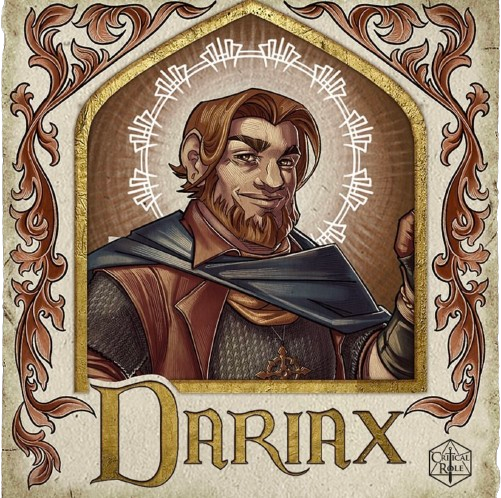
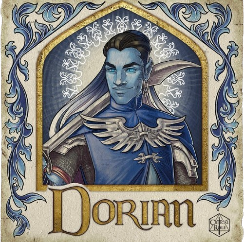
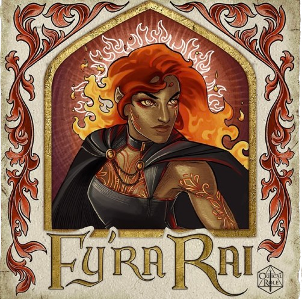
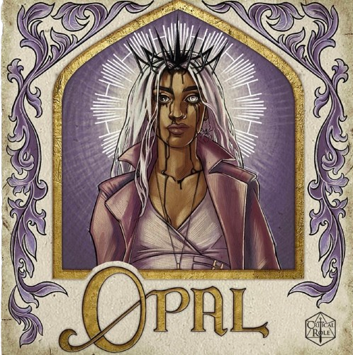

Exandria Unlimited: Kymal
 Art By: @agarthanguide
Art By: @agarthanguide
Brontë Wyvernwind, now known as Dorian Storm, is traveling with his brother Cyrus on a skyship to Emon, feeling conflicted between his responsibility to Cyrus and his life in Marquet with Bells Hells. They plan to seek Shaun Gilmore’s help to travel from Emon to Kymal. Eventually, they reach Kymal and join former companions Dariax Zaveon, Opal, and Fy’ra Rai at The Maiden’s Wish casino. Fy’ra has been searching for her sister, Opal hides the effects of the Circlet of Barbed Vision, and Dariax wins at a dice game, drawing the dealer’s suspicion. The group meets Morrighan Ferus, a bartender, and pursues a pickpocket who stole Opal’s Pearl of Power.
Dorian and Cyrus need money to pay off a bounty, and they plan to romance Morrighan to learn about potential opportunities. Morrighan, overhearing their conversation, later reveals she needs to steal from the casino’s vault due to threats from the Nameless Ones, a new group in town. She proposes a heist, and the group learns that the penthouse of actor Phaedrov Krishtan might hold valuable information. They break into the penthouse during Phaedrov’s performance, encounter guards, and face a chaotic battle involving Nameless Ones assassins. They manage to defeat the enemies, find blueprints, and a valuable urn.
The group plans a heist to get money for Cyrus’s bounty. They explore the tunnels beneath the casino and face a goliath lieutenant of the Nameless Ones. After a fierce battle, they find and steal 50,000 gold from the vault. Morrighan also discovers a disturbing marble carving linked to the Raven Queen, which she is compelled to destroy. The party plans their escape using the sky deck, which they plan to detach from the building.
As they prepare to leave, Cyrus brings explosives to help separate the sky deck. They encounter resistance from the Nameless Ones but manage to secure their escape route. Opal uses an illusion to fake the sky deck’s collapse, buying them time to flee. Dorian uses his mandolin to help Cyrus steady the sky deck, and the group successfully makes their getaway, ready to face their next challenge.
The characters are:
Dariax Zaveon 
Dariax Zaveon, a dwarven sorcerer/bard and member of the Crown Keepers, grew up in Turst Fields alongside his older brother, Taros. While Taros followed the family farm path, Dariax was a troublemaker, often causing literal and figurative fires that Taros had to put out. Despite their differences, they maintained a decent relationship. Dariax has dabbled in thieves’ circles and once claimed a relationship with a burlesque dancer, Tharla Starr, though this was later revealed to be false. He also had a passionate but tumultuous relationship with Deni$e Bembachula, which ended when he left her to deal with the fallout of some shady business they were involved in. It was during this time, in 842 PD, that Dariax joined the Crown Keepers.
Dorian Storm 
Dorian Storm, originally born as Brontë Wyvernwind, is an air genasi bard and member of both the Crown Keepers and Bells Hells. Born into the wealthy and prominent Wyvernwind family, Dorian lived a sheltered life among the tents of the Silken Squall. Despite his privileged upbringing, he felt constrained by his family’s expectations, particularly their use of Zone of Truth to extract confessions from him when caught lying. Around 842 PD, Dorian left home, adopting the name Dorian Storm and embarking on travels that took him to Marquet and Emon, where he pursued music gigs.
Fy’ra Rai 
Fy’ra Rai, a fire genasi monk, hails from the Elemental Plane of Fire and was raised by strict parents alongside her twin sister, Fy’ra Kai. Despite their competitive relationship, Fy’ra Rai harbored guilt over an incident where her sister fell, leading to her own injury. Both siblings eventually left home separately, and Fy’ra Rai believed her sister had perished, blaming herself for not protecting her.
Morrighan
Ferus

Morrighan Ferus, a lagomore paladin and former bartender, spent much of her life in Kymal, navigating the city’s underworld by working at casinos and executing heists. Feeling the weight of her existence in Kymal, she joined forces with the Crown Keepers for a lucrative heist at The Maiden’s Wish. During the mission, she experienced a profound connection to a mysterious bas-relief, guided by an inner birdsong that led her to destroy the artifact with the help of her companions. As they escaped with their spoils, a single raven seemed to affirm Morrighan’s actions, hinting at a greater destiny yet to unfold.
Opal 
Opal, a human warlock and member of the Crown Keepers, hailed from Byroden, born in 824 PD. Raised with her twin sister Ted by their father after their mother’s departure, Opal left home at 18, eventually arriving in Emon in 842 PD.
The Standoff in the Dressing Room ~ Episode 1
Encounter:
- 5 Guards
- 3 Assassins
# Round 1
add_damage('Dorian', 'Slashing', 10)
add_enemy_damage('Guard', 'Bludgeoning', 12)
update_damage_taken('Dorian', 5)
update_damage_taken('Morrighan', 7)
add_damage("Fy'ra", 'Bludgeoning', 7)
# Round 2
add_enemy_damage('Guard', 'Bludgeoning', 3)
add_enemy_damage('Guard', 'Piercing', 11)
update_damage_taken("Fy'ra", 14)
add_damage('Morrighan', 'Fire', 12)
# Burning Hands
add_damage("Fy'ra", 'Thunder', 37)
# Thunderwave
add_damage('Opal', 'Cold', 7)
# Hunger of Hadar
add_damage('Dariax', 'Fire', 105)
# Fireball
increment_kills('Dariax')
# Assassin
increment_kills('Dariax')
# Assassin
increment_kills('Dariax')
# Assassin
add_damage('Dariax', 'Radiant', 11)
# Sacred flame
# Round 3
add_enemy_damage('Guard', 'Bludgeponing', 7)
update_damage_taken('Opal', 7)
add_enemy_damage('Guard', 'Bludgeoning', 10)
add_enemy_damage('Guard', 'Radiant', 3)
# Divine Smite
update_damage_taken("Fy'ra", 13)
add_damage('Morrighan', 'Slashing', 16)
add_enemy_damage('Guard', '', 18)
update_damage_taken('Dariax', 18)
add_damage("Fy'ra", 'Bludgeoning', 19)
add_damage("Fy'ra", 'Radiant', 3)
increment_kills("Fy'ra")
# Guard
add_damage('Opal', 'Force', 9)
# Eldritch Blast
increment_kills('Opal')
# Guard
add_damage('Dariax', 'Radiant', 15)
# Sacred Flame
increment_kills('Opal')
# Guard
# Round 4
add_damage('Dorian', 'Piercing', 5)
add_damage("Fy'ra", 'Bludgeoning', 8)
add_damage('Dariax', 'Radiant', 10)
# Sacred Flame
increment_kills('Morrighan')
# GuardClash with a Nameless One Lieutenant ~ Episode 2
Encounter:
- Half Giant
# Pre-Initiative
add_enemy_damage('Giant', 'Poison', 12)
# Poison Cloud
update_damage_taken('Opal', 4)
update_damage_taken('Morrighan', 8)
# Round 1
add_damage('Morrighan', 'Slashing', 23)
add_enemy_damage('Giant', 'Bludgeoning', 3)
update_damage_taken('Morrighan', 3)
add_damage("Fy'ra", 'Bludgeoning', 20)
add_enemy_damage('Giant', 'Bludgeoning', 5)
update_damage_taken("Fy'ra", 5)
# Round 2
add_damage('Morrighan', 'Slashing', 11)
add_damage("Fy'ra", 'Bludgeoning', 31)
add_damage('Dorian', 'Psychic', 7)
# Dissonant Whispers
add_damage('Opal', 'Force', 7)
# Eldritch Blast 2/2
# Round 3
add_damage("Fy'ra", 'Bludgeoning', 21)
add_damage('Opal', 'Piercing', 19)
increment_kills('Opal')
# Half GiantNon-Fighting Damages
# Dorian strums a mandolin
update_damage_taken('Dorian', 10)
# Opal takes damage
update_damage_taken('Opal', 6)
# Escaping with the brumestone
add_damage('Dorian', 'Bludgeoning', 12)
add_damage('Dorian', 'Thunder', 20)
# Shatter
add_damage('Opal', 'Force', 10)
# Eldritch Blast
add_damage("Fy'ra", 'Bludgeoning', 8)
add_damage('Morrighan', 'Slashing', 7)
add_damage('Dorian', 'Thunder', 20)
# Chromatic Orb ~ Thunder
add_damage('Dariax', 'Fire', 26)
# Fireball
add_damage("Fy'ra", 'Bludgeoning', 13)Total Stats
Dariax
Damage:
Fire: 131
Radiant: 36
Total Damage Done: 167
Healing:
0
Damage Taken: 18
Times Knocked Unconscious: 0
Times
Killed: 0
Amount of kills: 3
Dorian
Damage:
Slashing: 10
Piercing: 5
Psychic: 7
Bludgeoning: 12
Thunder: 40
Total Damage Done: 74
Healing: 0
Damage Taken:
15
Times Knocked Unconscious: 0
Times Killed: 0
Amount of
kills:
Fy’ra
Damage:
Bludgeoning: 127
Thunder: 37
Radiant: 3
Total Damage
Done: 167
Healing: 0
Damage Taken: 32
Times Knocked
Unconscious: 0
Times Killed: 0
Amount of kills: 1
Morrighan
Damage:
Fire: 12
Slashing: 57
Total Damage Done: 69
Healing: 0
Damage Taken: 18
Times Knocked Unconscious: 0
Times Killed:
0
Amount of kills: 1
Opal
Damage:
Cold: 7
Force: 26
Piercing: 19
Total Damage Done: 52
Healing: 0
Damage Taken: 17
Times Knocked Unconscious: 0
Times Killed: 0
Amount of kills: 3
* Note, the damage totals are not 100% accurate, this could be from players not saying what damage type the attack did or separating damage types (such as Hex damage)
* The character artwork was made by: @agarthanguide